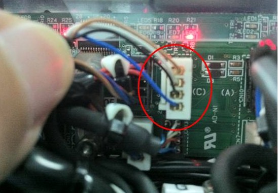

Service History
Subject: ASE NS-8080 8 Hands High UPH encountered:
- Error 291 The arch ready signal is not turned on (Z axis servo).
- Error 12 Hand up sensor doesn't turn ON.
- Error 298 Z axis servo error was detected.
Handler Model: NS-8080 8 Hands High UPH(NS88-04, S/N: 181655)
Controller: RC520
Date: 18 May 2011
Symptom
ASE enquiry on the following for 8 Hands High UPH Hands by email on 18 May 2011:
- Error 291 The arch ready signal is not turned on (Z axis servo).
- Error 12 Hand up sensor doesn't turn ON.
- Error 298 Z axis servo error was detected.
Temporary solution as advice by Epson is to re sit the connectors on the particular
Input Hand which may not work every time and may required powering down and up of handler.
Inter swapped the Home sensor of Input Hand A & C on 16th May 2011 with GETECH service guy but the error still occur from time to time.
|
|
|
|
Action

25 Nov 2010 email indicate at the Distribution Board SKP479, temporary resit white connector(for Home sensor) to clear error.
Request customer to collect error log:
C:\NS8000\Log\SRC_ERR\SV_ERR\
There are some of log data.
: Over current
: Position overflow
: Over speed error
: Torque error
: Communication error
: Homing error
: moving..
: E-Stop
Cause